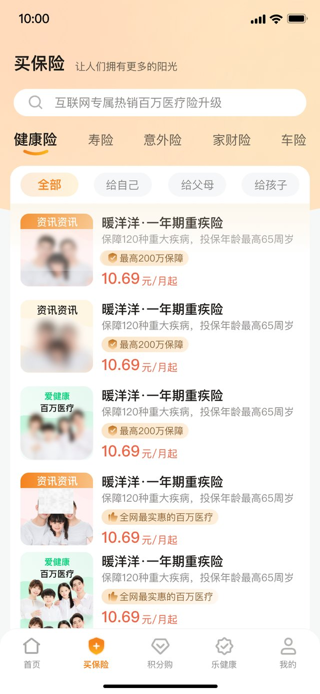
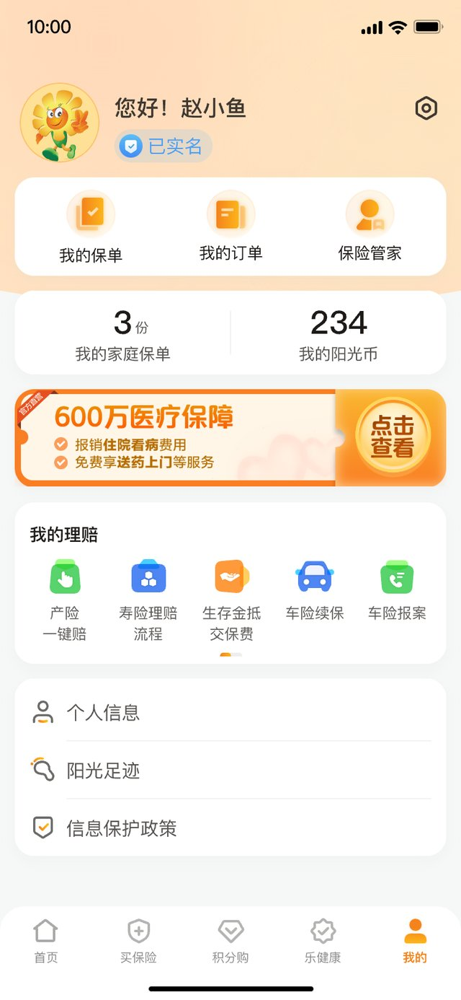
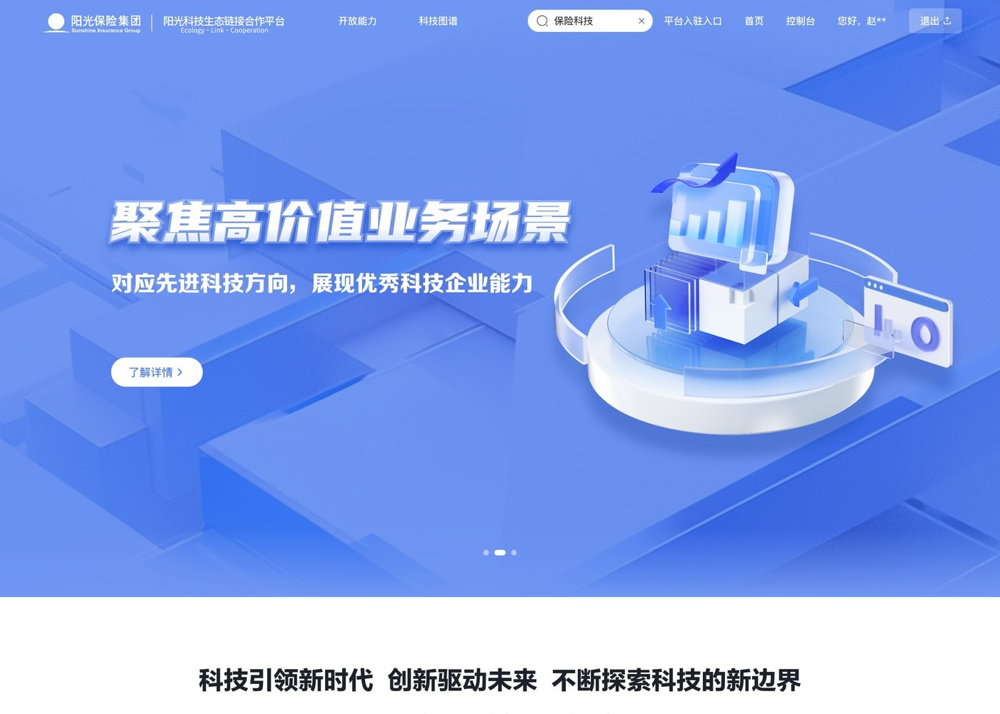

PORTFOLIO 2026 / 高级 UI 设计师
网页端 · App 端 · 数据可视化

01 — 个人经历
视觉传达设计出身。2017 年毕业后的第一份工作是在禾木人科技做选角 App——把散在表格、微信群和纸面上的信息，收进一套信息架构里。那一年学会的不是画界面，是先问清楚谁在用、在什么场景下用。
之后三年在首汽租车，从 App 全新改版做到员工端和 Mr.car，也第一次把设计框架、基础组件整理成可复用的标准化模板。改版之后，同一个需求从“重画一遍”变成“套用组件”。
2021 年进 AIBEE 智能科技，做给设计师和工程师用的效率工具 P&T 与工单系统 TICKET。用户就是隔壁工位的人，方案好不好用，第二天就能听到反馈——交互逻辑和用户调研是在这段时间补回来的。
现在在阳光保险集团。独立统筹多线项目的 UI 设计，覆盖网页端、App 端与数据可视化，从需求分析一路跟到落地。日常除了出方案，更多是在竞品和行业趋势里找依据，把“我觉得好看”换成“数据说明这样更好”。
| 年份 | 公司 | 职责 |
|---|---|---|
| 2022 — 至今 | 阳光保险集团高级 UI 设计师 | 独立统筹多线项目 UI 设计，覆盖网页端、App 端与数据可视化 |
| 2021 — 2022 | AIBEE 智能科技高级 UI 设计师 | 0→1 设计 P&T 提效工具与 TICKET 工单系统，主导搭建组件库 |
| 2018 — 2021 | 首汽租车高级 UI 设计师 | 主导 App 全新改版与员工端、Mr.car，输出设计框架与组件规范 |
| 2017 — 2018 | 禾木人科技UI 设计师 | 主导选角 App 信息架构与视觉界面设计 |
刊物页脚 / CONTACT
02 — 精选项目
从手掌里的 App，到十米外的大屏。同一套规则在不同尺寸上的答案。



02 / Web
面向生态合作方的 B 端平台，全套蓝色系设计语言。围绕导航层级、信息密度与状态表达重建版式秩序：一级导航加面包屑、头部信息三段式、审批状态色语义化，让开放能力与数据服务以更清晰的界面被阅读。
查看设计思路区域人流热力
24 小时流量曲线
分区负荷对比
清洁能源占比
03 / 大屏
21:9 的指挥中心主屏，观看距离 4 到 12 米。字号按米重算过一轮：标题 64px 起，数字用等宽字。三块屏共用同一套栅格，值班员换屏不需要重新找位置。
聊聊类似的项目04 / 平面
给自家工作室做的年度练习：只用黑、白、灰和一个蓝，测试同一套排印规则在纸张、屏幕、巨型 LED 上是否还成立。多数结论反过来改了界面里的字号阶梯。
聊聊类似的项目03 — 个人优势
不是只有效果图。从规则定义到上线走查，这六件事我全程都在。
从零建立令牌、栅格与组件分层，规范能长期维护。
设计与代码共用命名，交付即组件，少一次还原。
把复杂指标拆成层级，十米外也读得懂。
从标志到界面，同一种语气贯穿所有触点。
四端一套规则，尺寸差异不变体验断层。
标注、走查、灰度复盘，设计意图落进版本。